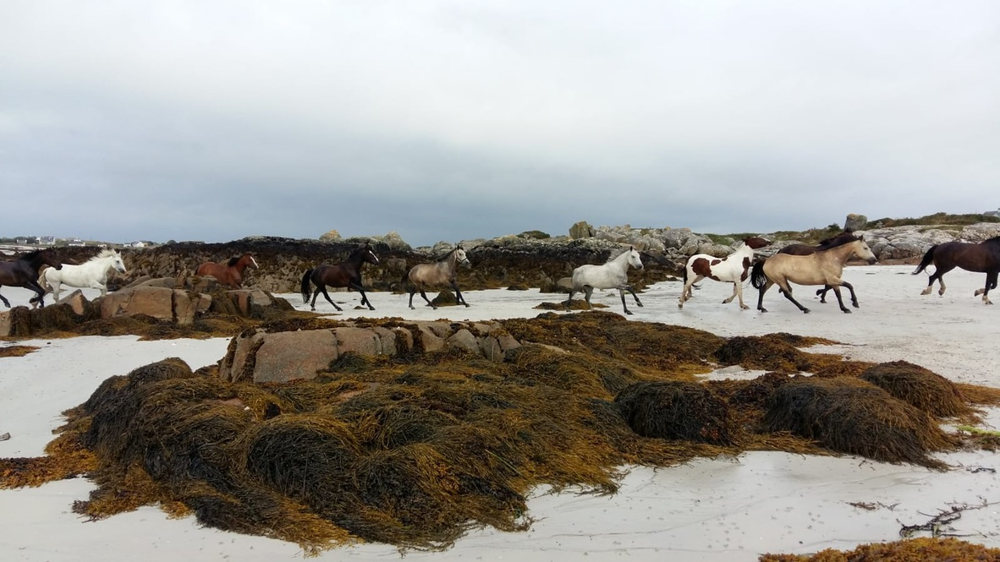

LES BESOINS FONDAMENTAUX DES CHEVAUX

L'alimentation
Le cheval est un herbivore; son alimentation doit principalement être constituée de fourrages (herbe et/ou foin). Il est généralement recommandé d'apporter 1.5kg de matière sèche (aliment, foin, herbe) pour 100 kg de poids vif. Pour exemple, un cheval de 600kg doit ingérer au minimum 10.5kg de foin par jour.
A l'état naturel, le cheval passe en moyenne 16 heures par jour à manger. Il a également la particularité d'avoir un petit estomac non élastique qui doit être rempli très régulièrement afin d'éviter que l'acidité endommage la paroi de l'estomac et provoque des ulcères. Ainsi, le cheval doit disposer de fourrage à volonté.
L'ajout d'une pierre à sel lui permet également d'apporter des éléments minéraux qui manquent à son alimentation.
Les déplacements
A l'état naturel, et selon la disposition des ressources dans son environnement, le cheval parcourt en moyenne une quinzaine de kilomètres par jour. Il a donc besoin de se déplacer pour sa santé mentale d'une part, mais également pour sa santé physique.
En effet, le déplacement permet au cheval de stimuler sa circulation sanguine et lymphatique.
Au club, en plus des leçons, le cheval est parfois lâché en liberté, au pré, au paddock ou dans le manège pour se défouler.
LA RELATION HOMME-CHEVAL

Le cheval est un animal herbivore de type « proie », ce qui le rend particulièrement vulnérable dans son milieu naturel. Il est donc très peureux de nature et a besoin, pour sa survie, d’accorder sa confiance (généralement au leader du troupeau) à partir du moment où nous le respectons dans sa nature profonde et que nous lui assurons soins, nourriture, sécurité et plaisir.
Ainsi il est très facile d’établir une relation de confiance avec lui. Une confiance sans laquelle nous ne pourrons travailler efficacement.
Le cheval est un animal grégaire. Dans chaque troupeau, nous pouvons observer une hiérarchie très bien établie, source de cohésion sociale. Chaque membre a sa place au sein du troupeau et respecte les règles établies par la hiérarchie. Il y a également des règles à respecter afin d’aborder les chevaux en toute sécurité.
Par ailleurs, nous devons accepter et respecter chaque cheval tel qu’il est et adapter notre comportement en fonction de son caractère. Il nous permet ainsi de développer nos capacités d’adaptation, qualité très recherchée dans le monde de l’entreprise.
Le système émotionnel du cheval est similaire au notre (le système limbique). Il possède tout comme nous 4 émotions de survie (la joie, la tristesse, la peur et la colère) qui ont chacune leur raison d’être. Les chevaux les expriment naturellement et sainement contrairement à nous car nous avons oublié en quoi elles nous sont utiles : notre survie. En apprenant à les gérer, nous évitons tout débordement émotionnel.
Le cheval ne comprend que la communication non verbale, il fonctionne par mimétisme, tout comme nous. Il ne suffit pas de vouloir que le cheval nous fasse confiance pour que ça arrive. Nous devons lui montrer l’exemple en portant toute notre attention sur ce que nous souhaitons obtenir (dans ce cas précis, il s’agit de la confiance : j’engage donc ma poitrine, je m’ouvre, ma tête est droite et je me redresse, je suis calme et prêt à développer une relation avec le cheval basée sur le respect).
L’information part du cerveau et entraine l’attitude corporelle adéquate.
Nous devons garder à l’esprit que le cerveau a la particularité de grossir ce sur quoi il porte son attention. Si nous punissons un cheval car il ne se comporte pas comme nous le souhaitons, nous amplifions ce comportement. Il n’a pas le recul, tout comme l’enfant et l’adolescent, pour se rendre compte qu’il a mal agit. La punition sera donc vécue comme une injustice et aura pour conséquence la perte de confiance.
Sans confiance, nous ne pouvons rien construire !
En résumé, je me concentre sur ce que je veux et j’ignore ce que je ne veux pas.